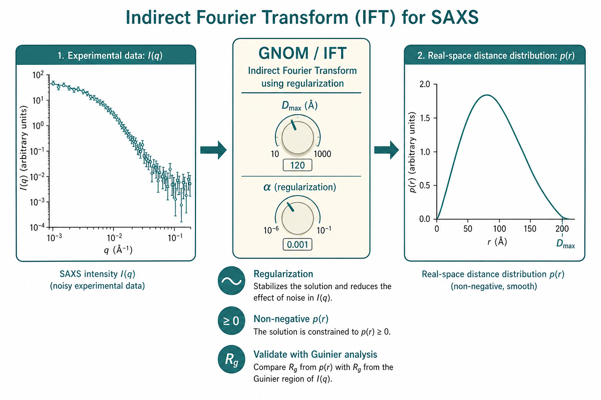

间接傅里叶变换（IFT）与 GNOM
From $I(q)$ to $p(r)$ — regularization and perceptual criteria
本导读以 Svergun（1992）Determination of the regularization parameter in indirect-transform methods using perceptual criteria（DOI: 10.1107/S0021889892001663）为核心，结合 GNOM 程序（Svergun, Semenyuk & Feigin 1988）与 Feigin & Svergun（1987）教科书框架，并延伸至 GIFT（Fritz 等 2000；Weyerich 等 1999）对相互作用体系的分解，以及 Fukasawa & Sato（2011）对结构因子 $S(q)$ 的 SQ-IFT。说明如何从 $I(q)$ 稳定反演距离分布函数 $p(r)$、如何选取正则化参数 $\alpha$ 与 $D_{\max}$，以及 IFT 何时失效、何时须改用 GIFT 或显式 $P(q)S(q)$ 模型。
问题是什么
稀溶液、各向同性、单分散粒子时，散射强度与实空间分布通过傅里叶变换相联系：
$$I(s) = \int_0^\infty p(r)\,\Phi(s,r)\,\mathrm{d}r,$$（生物文献常记 $s = 4\pi\sin\theta/\lambda$，与本站 $q$ 同义；$\Phi$ 含球对称核与仪器 smearing。）$p(r)$ 是任意两点间距离 $r$ 的概率分布，携带颗粒最大尺寸 $D_{\max}$、形状不对称性等信息——比 Guinier 的单一 $R_g$ 更丰富。
直接对噪声数据做数值傅里叶逆变换会得到病态（ill-posed）解：$I(s)$ 微小误差导致 $p(r)$ 剧烈振荡（Glatter 1977）。间接傅里叶变换（IFT） 通过 Tikhonov 正则化在「拟合数据」与「解的光滑性」之间折中，是生物 SAXS、胶体与软物质中从 $I(q)$ 进入实空间的标准入口。
与 Guinier 的关系：Guinier 只用到极低 $s$ 的二次近似；IFT 使用更广 $s$ 范围，对中等 $s$ 的形状敏感，并给出 $D_{\max}$。但 IFT 引入 $D_{\max}$、$\alpha$ 等人为参数，信息增益伴随假设成本——Trewhella 2017 要求报告 $D_{\max}$ 扫描与 Guinier $R_g$ 一致性。
核心难题：除 $p(r)$ 外还须指定辅助参数——尤其是支撑区间 $[D_{\min}, D_{\max}]$ 与正则化参数 $\alpha$（Lagrange 乘子）。$\alpha$ 过小 → $p(r)$ 振荡、负值；过大 → 过度光滑、丢失细节。Svergun 1992 将「肉眼选解」形式化为可优化的感知准则，并实现在 GNOM 中。
IFT 给出的是与数据及正则化假设相容的一类 $p(r)$，不是唯一「真实结构」。中空壳层与实心球可有相似 $I(q)$；柔性蛋白的 $p(r)$ 是构象系综的平均。因此 IFT 应视为整体形状与尺寸的诊断工具，须与 Guinier、浓度系列、独立技术（NMR、EM）及下游建模（DAMMIF）交叉验证（Petoukhov & Svergun 2013；Trewhella 2017）。

文献主线
Glatter 1977 → 正则化 IFT
Glatter 提出间接变换：将 $p(r)$ 展开为基函数，把积分方程化为矩阵方程 $\mathbf{J} = \mathbf{K}\mathbf{p}$。因病态性，须最小化
$$T_\alpha[\mathbf{p}] = \|\mathbf{J}-\mathbf{K}\mathbf{p}\|_{\mathbf{J}}^2 + \alpha\,\Omega[\mathbf{p}],$$其中 $\|\mathbf{J}-\mathbf{K}\mathbf{p}\|_{\mathbf{J}}$ 为倒易空间加权残差范数，$\Omega[\mathbf{p}]$ 为稳定器（常取 $\Omega = \int [p'(r)]^2\mathrm{d}r$ 要求光滑），$\alpha$ 为正则化参数。Glatter 的 IFT 程序族（IPP）与 GNOM 并行发展；ATSAS 生态以 GNOM 为主，软物质/胶体文献中亦常见 Glatter/Otto Glatter 工具链。
Svergun, Semenyuk & Feigin 1988：GNOM 程序
GNOM 将 $p(r)$ 分段常数或线性表示，自动处理 smearing 卷积；输出 $p(r)$、拟合 $I(s)$、$R_g$、$I(0)$ 与 $D_{\max}$。成为 ATSAS 包中 PRIMUS → GNOM 管线的核心（Konarev 2003）。技术要点：
- 核矩阵 $\mathbf{K}$ 含球对称 Bessel 型核与仪器 smearing 矩阵的乘积；
- 用户输入 $D_{\max}$、可选 $D_{\min}$、数据点权重 $\sigma_i^{-1}$；
- 自动 $\alpha$ 扫描 + 感知准则（Svergun 1992）为默认推荐路径。
Feigin & Svergun（1987）在教科书层面把 IFT 与直接变换、约束正则化统一叙述，是理解 GNOM 数学背景的入口。
Svergun 1992：感知准则自动选 $\alpha$
既有 $\alpha$ 选取法各有缺陷：
- $\chi^2 \simeq 1$ 准则： 需可靠 $\sigma_i$；常导致过光滑（Hofmann 1986）。
- 拐点 / 准最优准则： 假设最优解对 $\alpha$ 最稳定；但 $\alpha\to 0$ 与 $\alpha\to\infty$ 的解也「稳定」。
Svergun 1992 将专家目视判断写成六个无量纲准则，构造总估计 $E_\alpha$ 并最大化。各准则的物理含义简述：
- OSCILL： $p(r)$ 相对光滑参考的振荡程度；病态解 OSCILL $\gg 1$。
- POSITV： $p(r)\ge 0$ 的份额；物理上 PDDF 非负，负值区提示 $\alpha$ 过小或背景错。
- VALCEN： 质量是否集中在 $D_{\max}$ 中心区间；边界截断或 $D_{\max}$ 错误时 VALCEN 低。
- DISCRP： 倒易空间广义离散度；$\ll 1$ 过拟合噪声，$\gg 1$ 欠拟合。
- SYSDEV： 残差符号交替；系统趋势（如低 $s$ 全正残差）使 SYSDEV $\ll 1$。
- STABIL： 解对 $\alpha$ 微扰的稳定性；正确 $\alpha$ 邻域 STABIL 达局部极值。
感知准则的设计哲学是：在 $\sigma_i$ 不可靠时（生物 SASS 常见），仍能用解的形态学选 $\alpha$，而非机械 $\chi^2 \approx 1$。但若背景或 $q$ 刻度有系统错，任何 $\alpha$ 的准则都会异常——须先修数据（还原专题）。
Weyerich 等 1999 / Fritz 等 2000：GIFT 与相互作用体系
稀溶液极限下 $I(q) \approx N P(q)$，标准 IFT/GNOM 反演 $p(r)$ 即 形式因子 的实空间表示。浓度升高时 $I(q) = N P(q) S(q)$，$S(q)$ 调制低 $q$——直接 IFT 得到的是 $i(r)$（总相关），振荡、难解释（Weyerich 1999）。
广义间接傅里叶变换（GIFT） 同时拟合：
- $p(r)$（模型无关）： B 样条展开，经 Fourier + smearing 得 $P(q)$；
- $S(q)$（须模型）： 硬球 Percus–Yevick、多分散有效 $S^{\mathrm{eff}}(q)$、带电胶体 RMSA/HNC/RY 等（Fritz 2000）。
Weyerich 1999 比较多分散硬球的有效结构因子与「平均结构因子」近似：先用简单 $S(q)$ 恢复 $P(q)$，再换更物理的模型——两阶段策略避免一次陷入高维非线性。Fritz 2000 对 CTAB 胶束演示：带电体系在体积分数 $\phi \lesssim 0.3$ 仍可分离 $P$ 与 $S$，但电荷与离子强度不可同时无约束确定，存在参数简并，须外加渗透压或稀释系列。
Fukasawa & Sato 2011：SQ-IFT 与 $g(r)$
当目标不是单粒子 $p(r)$ 而是粒子间对关联函数 $g(r)$ 时，Fukasawa 提出结构因子 IFT（SQ-IFT）：对 $S(q)-1$（或实验有效 $S^{\mathrm{exp}}$）做正则化 Fourier 反演，得到 $g(r)$，无需预设 OZ 闭合形式。应用包括：
- 分子液体径向分布（与液体衍射统一框架）；
- 蛋白溶液中静电排斥 + 短程吸引导致的平衡团簇（溶菌酶 SANS）；
- HSA SAXS 浓度与离子强度系列——实空间看聚集与相互作用势。
与 GIFT 的区别：SQ-IFT 侧重 $g(r)$；GIFT 侧重在已知 $S(q)$ 模型下恢复 $P(q)$/$p(r)$。浓溶液若只跑 GNOM，应预期失败；应显式 $P(q)S(q)$ 拟合、GIFT 或 SQ-IFT。
Fukasawa 对 HSA 的 SAXS 显示：离子强度与浓度改变 $S(q)$ 低 $q$ 行为，SQ-IFT 给出的 $g(r)$ 可直观看到短程吸引与长程排斥共存时的平衡团簇图像——这是单粒子 $p(r)$ 无法提供的。方法假设各向同性、径向相关；各向异性相互作用须更复杂模型。
关键公式与结论
积分方程与范数
$$J(s)=\int_{D_{\min}}^{D_{\max}} K(s,r)\,p(r)\,\mathrm{d}r,$$ $$\|\mathbf{J}-\mathbf{K}\mathbf{p}\|_{\mathbf{J}} = \left\{(N-1)^{-1}\sum_{i=1}^{N}\sigma_i^{-2}\left[J(s_i)-\int K(s_i,r)p(r)\mathrm{d}r\right]^2\right\}^{1/2}.$$稳定器常用 $\Omega[\mathbf{p}] = \int [p'(r)]^2\mathrm{d}r$（光滑惩罚）；Glatter 1977 亦用二阶差分。$\sigma_i$ 须来自还原链传播（Pauw 2013），勿仅用计数统计。
球对称核与 $R_g$、$I(0)$
$$P(q)=4\pi\int_0^{D_{\max}} p(r)\frac{\sin(qr)}{qr}\,\mathrm{d}r.$$$$R_g^2 = \frac{\int_0^{D_{\max}} r^2 p(r)\,\mathrm{d}r}{2\int_0^{D_{\max}} p(r)\,\mathrm{d}r}, \qquad I(0) \propto \int_0^{D_{\max}} p(r)\,\mathrm{d}r$$
（$I(0)$ 与分子量的比例关系须 绝对标定，见标定专题。）
GNOM vs GIFT vs SQ-IFT
| 方法 | 输入 | 输出 | $S(q)$ 处理 | 典型适用 |
|---|---|---|---|---|
| GNOM / IFT | $I(q)$，$\sigma_i$ | $p(r)$，$R_g$，$I(0)$ | 忽略（要求稀溶液） | 生物单分散蛋白、稀释胶体 |
| GIFT | $I(q)$ | $p(r)$ + 拟合 $S(q)$ 参数 | 硬球/带电/多分散模型 | 浓胶体、胶束，$\phi \lesssim 0.3$ |
| SQ-IFT | $S(q)$ 或 $I/P$ | $g(r)$ | 反演 $S(q)-1$，模型无关 | 蛋白团簇、液体结构 |
| 显式拟合 | $I(q)$ | $P(q)$、$S(q)$ 参数 | 用户指定模型 | 已知形状 + 相互作用理论 |
六个感知准则（Svergun 1992）
| 代号 | 含义 | 理想范围 / 解释 |
|---|---|---|
| OSCILL | $p(r)$ 光滑度 $\|p'\|/\|p\|$ 相对参考 | $\simeq 1$ 单峰光滑；$>3$ 振荡病态；实心球 $\approx 1.1$ |
| POSITV | 非负性 $\|p^+\|/\|p\|$ | $=1$ 完全非负；$<1$ 含负值区域 |
| VALCEN | 中心区间 $[D_{\min}+\Delta D/4,\,D_{\max}-\Delta D/4]$ 质量 | $>0.5$ 合理；$<0.3$ 提示 $D_{\max}$ 设错 |
| DISCRP | 广义离散度（倒易空间） | $0.7$–$0.95$ 为佳；$\gg 1$ 拟合差；$\ll 1$ 过拟合噪声 |
| SYSDEV | 残差符号交替（系统偏差） | $\simeq 1$ 无系统偏差；$\ll 1$ 存在趋势性残差 |
| STABIL | 解对 $\alpha$ 变化的稳定性 | 正确 $\alpha$ 附近最小；$\simeq 10^{-2}$ 表示 $\alpha$ 加倍时解变约 0.7% |
总估计 $E_\alpha$ 由各准则的归一化贡献构成；GNOM 扫描 $\alpha$ 取 $E_\alpha$ 最大。典型行为：低 $\alpha$ → OSCILL 高、POSITV 低；高 $\alpha$ → DISCRP $\gg 1$、$p(r)$ 塌缩为常数；最优 $\alpha$ 在中间「峡谷」。
- OSCILL $\gg 1$ 且 POSITV $< 0.9$ → $\alpha$ 过小，增大 $\alpha$ 或检查噪声/背景。
- DISCRP $\gg 1$ 且 SYSDEV $\ll 1$ → 系统残差（背景、$q$ 刻度、smearing）；勿仅靠调 $\alpha$。
- VALCEN $< 0.3$ → $D_{\max}$ 过小或过大；扫描 $D_{\max} \pm 10\%$。
- STABIL 在 $\alpha$ 扫描中呈尖锐峰 → 解对 $\alpha$ 敏感，报告扫描曲线。
$D_{\max}$ 与 $p(r)$ 解读
- $D_{\max}$： $p(r)$ 支撑上界；应略大于真实最大内部距离（生物大分子常取 $D_{\max} \approx 2 R_g$ 试探后调整）。设太小 → VALCEN 低、$p(r)$ 截断；太大 → 尾部噪声放大。
- $p(r)$ 形状： 紧凑球 → 单峰对称；棒状 → 非对称拖尾；双峰 → 结构域或双分散；中空壳层 → 峰位反映内外径。
- 导出量： $R_g^2 = \int r^2 p(r)\mathrm{d}r / (2\int p(r)\mathrm{d}r)$；$I(0) \propto \int p(r)\mathrm{d}r$（须绝对标定才得 $M$）。
与 Guinier 的关系
低 $s$ 区 $I(s) \approx I(0)\exp(-R_g^2 s^2/3)$。IFT 给出的 $R_g$、$I(0)$ 应与 Guinier 分析 一致（$\pm 5\%$）；偏差提示背景、$q$ 范围或 $D_{\max}$ 问题。IFT 优势：利用全 $q$ 范围、对中等 $q$ 形状敏感、给出 $D_{\max}$。
| 判据 | 推荐 | 违反时 |
|---|---|---|
| GNOM $R_g$ vs Guinier $R_g$ | $<5\%$ | $>10\%$：查 $q_{\min}$、背景、$D_{\max}$ |
| $p(r)$ 在 $D_{\max}$ 处 | 自然趋零 | 截断或振荡：调 $D_{\max}$/$\alpha$ |
| 浓度系列 $p(r)$ | 重叠（稀溶液） | 随 $c$ 变：$S(q)$ 或聚集 |
| 拟合 $I(s)$ 残差 | 随机、SYSDEV $\simeq 1$ | 系统趋势：smearing/背景 |
典型 $p(r)$ 形状速查
| 形态 | $p(r)$ 特征 | 注意 |
|---|---|---|
| 紧凑球 | 单峰、近似对称 | 空心球亦可单峰——须结合 $I(q)$ 振荡 |
| 棒 / 椭球 | 非对称、拖尾 | 与柔性链区分需 Kratky |
| 哑铃 / 双结构域 | 双峰或肩峰 | 多分散可洗成宽单峰 |
| 空心壳层 | 峰位反映壁厚 | 与实心球 $I(q)$ 可相近 |
| 无规卷曲 | 宽、多 $\alpha$ 敏感 | 宜用系综方法（EOM） |
- 输入质量： 背景已扣、$q$ 刻度可靠；低 $q$ 至少 5–8 点且 $s_{\max} R_g \lesssim 1.3$ 在 Guinier 区内。
- 初始 $D_{\max}$： 从 $2.5 R_g$ 或 Guinier $R_g$ 估计；使 $p(r)$ 在 $D_{\max}$ 处自然衰减至零。
- smearing： 输入仪器 smearing 参数或先 desmear（生物 pinhole 常可忽略）；Kratky 须 smeared 核。
- 选解： 优先自动 $\alpha$（感知准则）；目视检查 OSCILL、POSITV、残差分布。
- 验证： $R_g$、$I(0)$ 与 Guinier 一致；拟合 $I(s)$ 无系统残差；浓度系列 $p(r)$ 重叠。
- 下游： 合格 $p(r)$ 方可进入 DAMMIF / BODIES 等 ab initio 建模（BioSAS 专题）。
IFT 何时失效
下列情形中，GNOM 输出的 $p(r)$ 不应作为单粒子结构解释；须改用稀释、GIFT、SQ-IFT 或显式模型拟合。
| 条件 | 机理 | 如何判断 | 替代策略 |
|---|---|---|---|
| 浓溶液 / 强 $S(q)$ | $\mathbf{K}$ 含结构因子；$p(r)$ 非单粒子分布 | 浓度系列 $p(r)$ 随 $c$ 变；$I(0)/c$ 非恒定 | 稀释；显式 $P(q)S(q)$ 模型拟合 |
| 多分散 / 混合物 | $p(r)$ 为平均核，非真实 PDDF | 宽化单峰、$D_{\max}$ 不稳；EM 显示尺寸分布 | 尺寸分布拟合（ML、CONTIN）；分离组分 |
| 柔性 / IDP 系综 | 无单一 $p(r)$；时间/构象平均 | $p(r)$ 随 $\alpha$ 剧烈变；Kratky 平台高 | ENSEMBLE、EOM；报告 $R_g$ 与 $p(r)$ 系综 |
| 低信噪 / $q$ 范围窄 | 病态加剧；$\alpha$ 选择不确定 | DISCRP 全范围异常；POSITV $\ll 1$ 任何 $\alpha$ | 延长曝光；USAXS 延伸低 $q$；仅 Guinier |
| 背景错误 | 虚假低 $q$ 信号进入核 | $p(r)$ 长尾非零；$R_g$ 远大于预期 | 重测缓冲液；SEC-SAS |
| 各向异性 / 取向 | 球对称假设破缺 | 2D 图样非圆对称；$p(r)$ 物理不合理 | 2D 分析；取向平均或 GISAXS |
| $D_{\max}$ 严重错误 | 支撑区间不匹配 | VALCEN $<0.3$；$p(r)$ 在边界突变 | 扫描 $D_{\max}$；用 $2 R_g$–$3 R_g$ 试探 |
| 强 smearing 未处理 | $\mathbf{K}$ 错误 | 拟合残差系统性；$R_g$ 偏大 | smeared IFT 或 smeared 模型 |
实践要点与坑
工作流：从 PRIMUS 到 GNOM
- PRIMUS 预处理： 合并子曝光、减背景、检查浓度系列；CORMAP 比较曲线是否统计一致。
- AUTORG / Guinier： 得 $R_g$、$I(0)$ 初值与拟合区间；作为 GNOM 的独立基准。
- GNOM： 输入 $D_{\max}$（常从 $2$–$2.5\,R_g$ 起试）、自动 $\alpha$；检查感知准则与 $p(r)$ 尾部。
- 验证环： $R_g$、$I(0)$、$D_{\max}$ 与 Guinier、绝对 $M$（若有）、浓度系列互证。
- 下游： 合格 $p(r)$ → DAMMIF；柔性体系改 EOM（ATSAS 专题）。
Petoukhov & Svergun（2013）强调：ab initio 建模对 $p(r)$ 质量敏感；前步 Guinier 不合格时，GNOM 的「漂亮」$p(r)$ 常为假阳性。
浓度系列与 SEC-SAS 中的 IFT
稀溶液极限下，不同浓度 $c$ 还原后的 $p(r)$ 应形状重叠（允许 $I(0)/c$ 缩放）。若低 $c$ 与高 $c$ 的 $p(r)$ 或 $R_g$ 系统性不同，说明 $S(q)\neq 1$ 或聚集，而非 IFT 参数问题。正确流程：先做浓度外推或 SEC 分峰，再在「无限稀释」等效曲线上跑 GNOM（Mertens & Svergun 2010；Trewhella 2017）。
SEC-SAXS 峰宽使有效 $q$ 范围内信噪变化；峰前/峰后子曲线 $p(r)$ 不一致提示未充分稀释或柱上变化。与 DLS、AUC 联用是 BioSAS 标准 QC，IFT 不能替代样品单分散验证。
报告与可重复性（Trewhella 2017）
发表须报告：GNOM 版本、$D_{\max}$ 及稳定性扫描、$\alpha$ 选取方式（自动感知准则或手动）、Guinier 拟合区间、$R_g$/$I(0)$ 与 Guinier 一致性、$p(r)$ 图与拟合 $I(s)$ 残差。存入 SASBDB 时附 $\sigma(s)$ 定义（是否含 1% 下限）。审稿人常问「为何选此 $D_{\max}$」——须展示 $D_{\max}\pm 10\%$ 时 $p(r)$ 与 $R_g$ 变化 $<5\%$。
- $\alpha$ 手动调参 → 如何判断： 不同 $\alpha$ 的 $p(r)$ 形状定性不同 → 须用感知准则或固定自动模式；发表时报告 $\alpha$ 选取方式。
- $D_{\max}$ 过大 → 如何判断： $p(r)$ 尾部振荡、负值；VALCEN 低。逐步减小至尾部平滑归零。
- 过拟合噪声 → 如何判断： DISCRP $<0.7$、OSCILL $>3$、拟合曲线穿过误差棒内每个点。增大 $\alpha$ 或截断高 $q$ 噪声区。
- 与 Guinier $R_g$ 矛盾 → 如何判断： 差异 $>10\%$ → 查背景、$q$ 下限、绝对标定；勿强行采信单一 $p(r)$。
- 把 $p(r)$ 当「真实结构」→ 如何判断： IFT 给出的是与数据相容的分布之一；中空壳层与实心球可有相似 $I(q)$。须结合建模与独立技术（NMR、EM）。
- 误差棒不可信 → 如何判断： 若 $\sigma_i$ 仅为计数统计、未含系统误差，$\chi^2$ 准则误导 $\alpha$。用 Pauw 2013 SEM 传播；感知准则对 $\sigma$ 误设较稳健。
- 浓溶液仍跑 GNOM → 如何判断： 低 $q$ 隆起、$p(r)$ 多峰、浓度系列 $p(r)$ 不重叠。改稀释、GIFT 或 $P(q)S(q)$ 拟合（Weyerich 1999）。
- 多分散体系 → 如何判断： $p(r)$ 宽化单峰、$D_{\max}$ 随 $\alpha$ 漂移。用 CONTIN/尺寸分布拟合，或分离组分（SEC-SAS）。
- 发表报告 → 如何判断： 须写 $D_{\max}$、$\alpha$ 选取方式、Guinier 区间、$R_g$ 与 $p(r)$ 一致性；Trewhella 2017 要求展示 $p(r)$ 与 $D_{\max}$ 稳定性扫描。
相关词条
间接傅里叶变换（IFT）、 距离分布函数 $p(r)$、 回转半径 $R_g$、 Guinier 分析、 前向散射 $I(0)$、 散射矢量 $q$、 形式因子、 结构因子、 多分散、 仪器 smearing、 绝对强度
相关学习章
- 02 散射基础 — $q$、$P(q)$ 与 $p(r)$ 的傅里叶关系
- 06 Guinier / Porod — 低 $q$ 与 $R_g$；IFT 验证基准
- 07 实空间与 IFT — 学习路径中的 GNOM 系统讲解
- 专题：数据还原 — $\sigma(q)$ 与背景对 IFT 的影响
- 专题：绝对标定 — $I(0)$ 与分子量
- ATSAS 工具链 — PRIMUS → GNOM 管线
- BioSAS 专题 — $p(r)$ 在分析管线中的位置
文献列表
- Determination of the regularization parameter in indirect-transform methods using perceptual criteria. Dmitri I. Svergun (1992). DOI: 10.1107/S0021889892001663
- Small-angle scattering of interacting particles. II. Generalized indirect Fourier transformation under consideration of the effective structure factor for polydisperse systems. B. Weyerich, J. Brunner-Popela, O. Glatter (1999). DOI: 10.1107/S0021889898011790
- Evaluation of small-angle scattering data of charged particles using the generalized indirect Fourier transformation technique. G. Fritz, A. Bergmann, O. Glatter (2000). DOI: 10.1063/1.1321770
- Versatile application of indirect Fourier transformation to structure factor analysis: from X-ray diffraction of molecular liquids to small angle scattering of protein solutions. Toshiko Fukasawa, Takaaki Sato (2011). DOI: 10.1039/c0cp01679a
- Applications of small-angle X-ray scattering to biomacromolecular solutions. Maxim V. Petoukhov, Dmitri I. Svergun (2013). DOI: 10.1016/j.biocel.2012.10.017
- Small-angle X-ray and neutron scattering. Cy M. Jeffries et al. (2021). DOI: 10.1038/s43586-021-00064-9